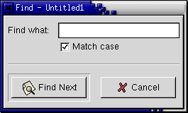

Find Dialog

Find What:
Type the word you want to find in this box. This is the search string. The command searches for the string of letters or numbers that you type, so if you search for "in", you will find the middle two letters of "find", as well as the word "in".
Match Case
This checkbox determines whether the string you are looking for must have the same combination of capital and lower case letters as the search string. If this box is selected, then "In" will not match "in". If it is not selected, "in" matches "In", "IN", "in", and "iN".
Find Next
Clicking on this button will find the next occurrence of the search string in the document. AbiWord starts searching from the insertion point, and wraps round to the beginning of the document once the end is reached. The search stops when the whole document has been searched once.
Cancel
This button closes the Find dialog.